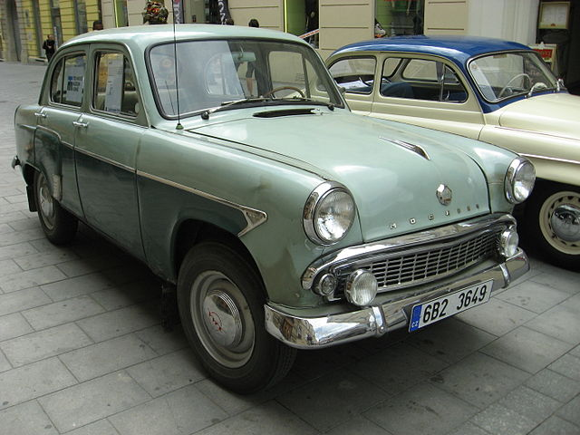
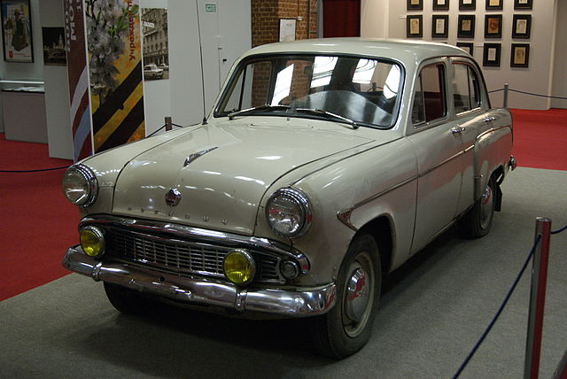
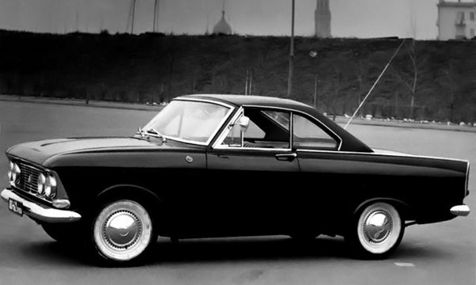
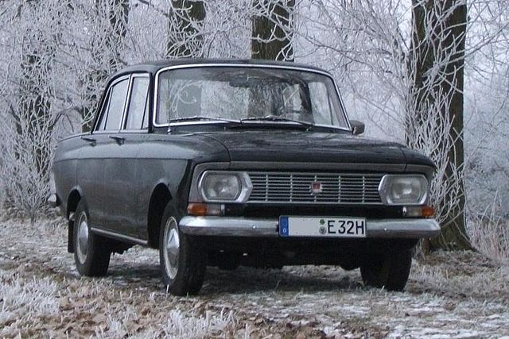

У 1956 році почато випуск нового Москвича-402, а вже в липні 1958 була проведена його модернізація. Нова версія отримала індекс Москвич-407. На цих автомобілях у 1958 році заводська команда дебютувала на міжнародних спортивних трасах.

Москвич 402
Випуск перехідної моделі Москвич-403 розпочався в 1962 році. Окрім базових седанів Москвич-402 і 403, серійно випускалися модифікації з кузовами універсал і фургон, а також повноприводна версія Москвич-410.

Москвич 403
У 50-і — 60-і роки, на МЗМА активно велися конструкторські експериментальні роботи. Так з'явилися: відкритий спортивний Москвич-404 з форсованим чотирьохкарбюраторним 60-сильним двигуном, купе на базі Москвича-402, гоночні «формули», на яких заводські гонщики не раз ставали чемпіонами країни. В кінці 1950-х, коли переходили на випуск 407-го, паралельно створили і випробували дві серії позашляховиків Москвич-415. Цікавим був проект мікроавтобуса А9 — восьмимісного автомобіля з вузлів Москвичів-407 і 410, який був створений за завданням Міністерства автомобільної промисловості СРСР і відділу автопрому Держплану. Дослідний зразок — був зібраний літом 1958-го. Проте, на початок 1960-х завод вимушений був згорнути роботи над цими перспективними проектами — не вистачало ні засобів, ні устаткування, ні площ для їх виробництва.

Москвич 408 Турист - експериментальна модель
Проте темп оновлення серійних моделей залишався високим. Так, в 1964 році розпочато випуск автомобілів Москвич-408, а в травні 1967 з конвеєра зійшов мільйонний автомобіль марки Москвич. Ним став Москвич-408. Вже в жовтні 1967 року — був випущений Москвич-412, а вже через рік з'явилися модифікації цієї моделі з кузовами універсал і фургон. Москвич-412 непогано зарекомендував себе на спортивних трасах. Зокрема, заводська команда показала добрі результати в ралі Лондон-Сідней і Лондон-Мехіко.

Москвич 412
У жовтні 1968 року МЗМА був перейменований в Автомобільний завод імені Ленінського комсомолу АЗЛК.